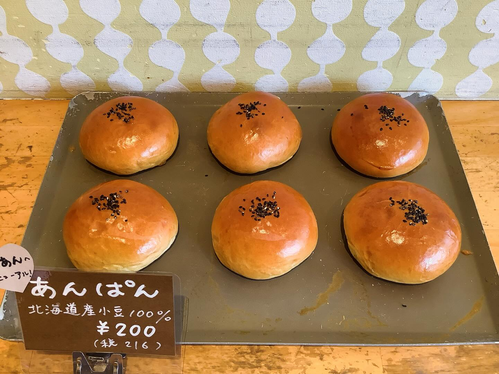
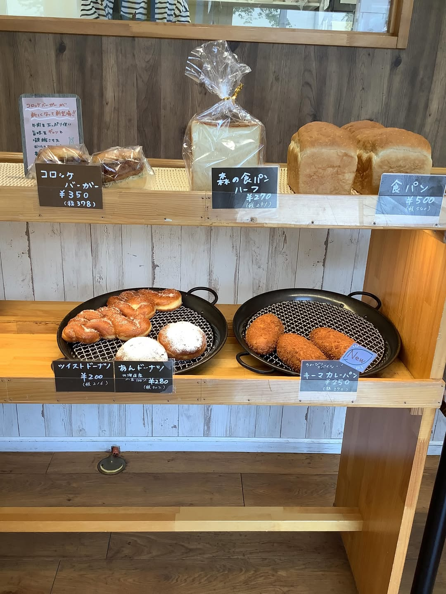

あんぱん
北海道産小豆100%のあんこ。つやつやに焼き上がった定番です。
BAKERY — TSURUGAOKA, FUJIMINO
国産小麦100%、ふわっふわの焼きたてを。
イトーヨーカドー向かい、鶴ケ岡の小さなパン屋です。
9:00–17:00｜火・水曜 定休｜最新の営業日はInstagramで
ABOUT
ふじみ野市鶴ケ岡、イトーヨーカドー食品館の向かいにあるパン屋です。生地は国産小麦100%・無添加。「焼きたてにこだわっているというふわっふわ感はびっくりしますよ」とクチコミでも評判の、やさしい味を焼いています。
有名店のパン職人や有資格者のプロデュースを受けながら、食パンからお惣菜パン、ドーナツまで毎日の棚を作っています。子ども用の動物型トングが置いてある、家族連れにやさしいお店です。

焼きたてにこだわった、やさしい味。
SHOP INFO
| 店名 | ふじみのパンの森 |
|---|---|
| 住所 | 埼玉県ふじみ野市鶴ケ岡5-1-8 |
| アクセス | イトーヨーカドー食品館 埼玉大井店の向かい |
| 営業時間 | 9:00–17:00 （最新の営業日・時間はInstagramをご確認ください） |
| 定休日 | 火曜・水曜 |
| 電話 | 049-256-7079 |
CONTACT
ご来店・お問い合わせは、店頭またはお電話にてどうぞ。焼き上がりや営業日のお知らせはInstagramで発信されています。